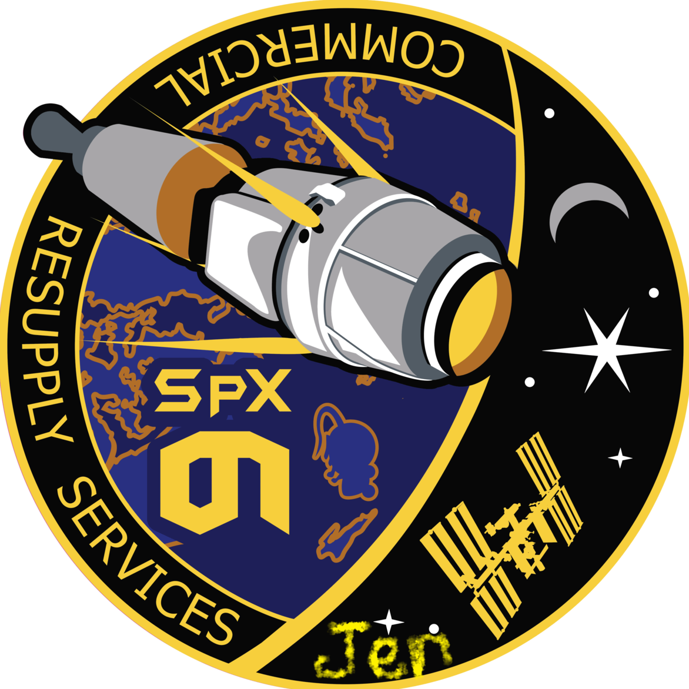

Hyperblog
Tu blog de confianza!
Este es el titulo atractivo e interesante del post
y este es el párrafo de inicio donde vamos a explicar las cosas increíble que podemos hacer al crear ramas
 /p>
/p>
Los blog son la mejor forma de compartir información y tus ideas. Mucho mas que ir a conferencias o salir en YouTube. Excepto si eres un rockstar. Pero estadisticamente no lo eres.... por ahora..